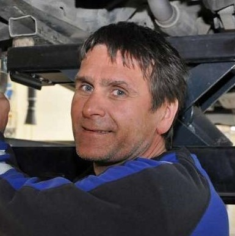
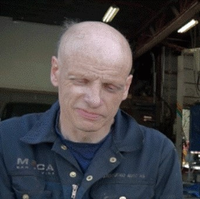
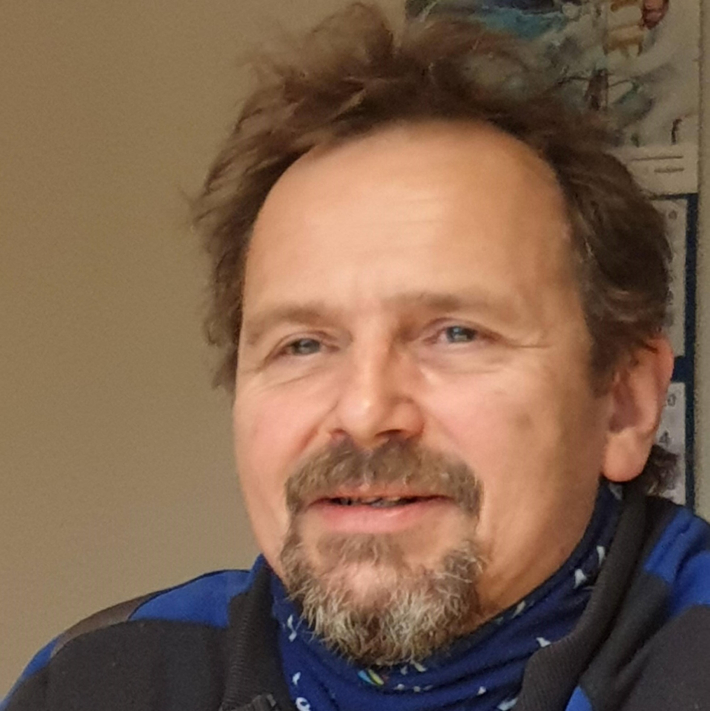
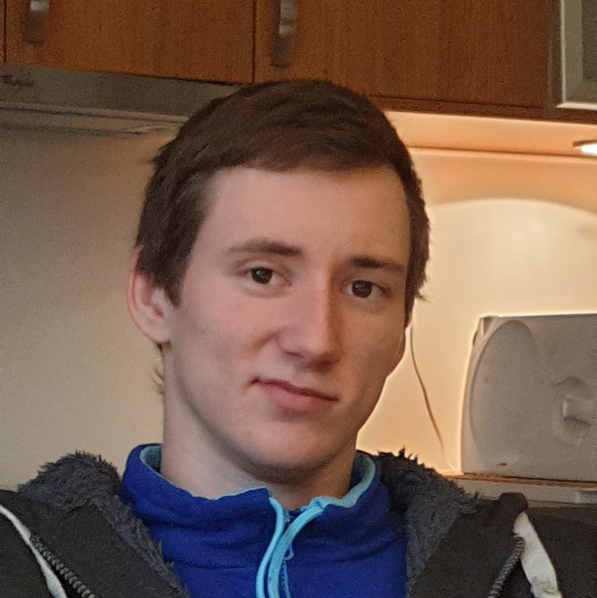

Storfjord Auto AS
Storfjord Auto åpnet i 1997 etter at Tor-Vidar Nystad og Odd-Idar Figenschau kjøpte bygningen tidligere kjent som Skibotn Auto AS. I 2004 ble Storfjord Auto AS offisielt en del av MECA, og er det enda den dag i dag De var først kun de to som jobbet der, men har i senere ansatt 2 til. I 2013 utvidet de bedriften for 2 millioner kroner og bygget en ny etasje samt en ny del av selve verkstedet.
Storfjord Auto AS gjør service og reperasjoner på alle bilmerker og tar imot kjøretøy fra ATV til Kjøretøy og til 5 tonns bobiler

Tor-Vidar Nystad
Stilling:
Daglig leder/Eier
Fagbrev:
Biloppretter

Odd-Idar Figenschau
Stilling:
Mekaniker/Eier
Fagbrev:
Reperatør av skog og landbruksmaskiner
Mekaniker

Torgrim Elvemo
Stilling:
Oppretter
Fagbrev:
Oppretter

Krisoffer Daniel Hansen
Stilling:
Mekaniker
Fagbrev:
Ingen fagbrev